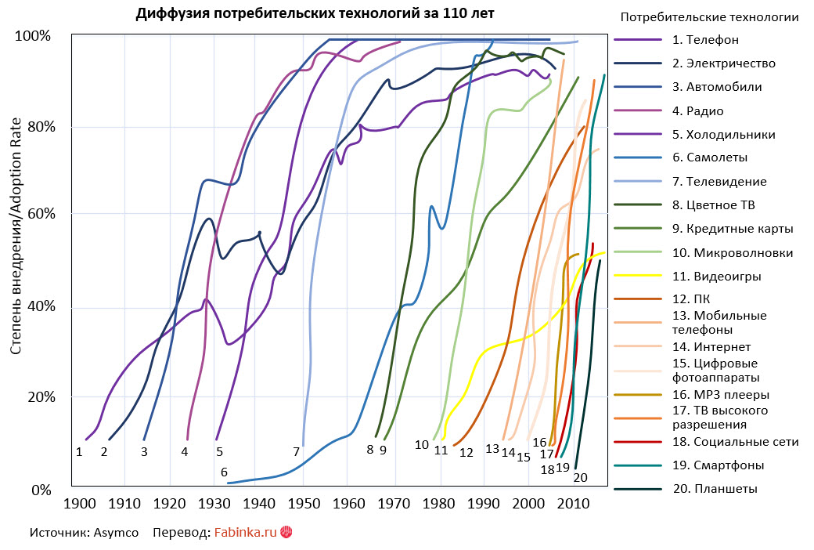

Ускорение диффузии технологий и последствия
1 марта в блоге экономистов Банка Англии прозвучало: «В глобальном технологическом сообществе растут тревоги, вызванные слабой готовностью развитых экономик к следующей промышленной революции. Ее наступление может значить замещение миллионов преимущественно низкоквалифицированных рабочих, крах многих, существующих долгое время, но медленно адаптирующихся компаний, существенное увеличение разницы в доходах общества и растущую промышленную концентрацию, связанную с резким ростом относительно небольшого количества мультинациональных технологических корпораций.
Резкое падение стоимости ключевых технологий БПЛА
себестоимость
единицыСредняя
себестоимость
3D печати
аналогичных
характеристикПромышленные роботы Себестоимость секвенирования
ДНКСтоимость
кВт*ч
солнечной
энергииСенсоры
(3D лидар)Себестоимость смартфона аналогич
ных характеристик2007:$100k
2013:$700k2007:$40k
2014:$100k2007:$550k
2014:$20k2000:$2.7bn
2007:$10mn
2014:$1k1984:$30
2014:$0,162009:$30k
2014:$802007:$499
2015:$10World Economic Forum White Paper Digital Transformationof Industries: Digital Enterprise, January 2016 Перевод: Fabinka.ru Экономисты, анализируя ход предыдущих индустриальных революций, отмечают, что не все из этих рисков случаются. Однако, такой подход возможно недооценивает существенно отличную природу технологических достижений, происходящих в настоящее время, в смысле их значительно больших индустриальных и профессиональных значений и скорости их диффузии.
По этой причине было бы ошибкой отвергать риски, связанные с этими новыми технологиями, признавая их незначительными».
Mauricio Armellini and Tim Pike, Bank Underground — блог сотрудников Банка Англии (Bank of England)
Обратите внимание на упоминание изменения скорости диффузии технологий — времени, за которое они начинают активно использоваться большинством потребителей (ими пользуется большинство из четвертого уровня, late majority пользователи в модели диффузии потребительских инноваций Роджерса). На рисунке 1 приведено изменение этой скорости за последние 110 лет.
Ключевая технология, которая увеличивает углы наклона кривых, делая их почти вертикальными линиями — интернет. Потребители все быстрее через ярмарки тщеславия лайки, шэры и репосты узнают об уникальных потребительских характеристиках продуктов и хотят такой же новый гаджет. С другой стороны, на скорость интеграции технологий в наши жизни влияет рост скорости падения их стоимости (рисунок в шапке). На что в свою очередь очень сильно влияет рост степени автоматизации производств и ускорение диффузии производственных технологий (рисунок 2).

Ключевой вопрос: что будет дальше?
И тут экономисты Банка Англии в цитате выше предупреждают: ни при рапространении конвейеров и электрификации в 1870, ни при распространении автоматизации в 1970 не было этих сверхскоростных траекторий в форме буквы J, когда технология рождается — и за несколько лет становится ключевым конкурентным преимуществом компании (а затем отрасли и национальной экономики). За эти же несколько лет другая компания, не успевшая адаптировать и интегрировать в ежедневную деятельность технологию, погибает. «Еще в 2011 году представители Foxconn заявили, что в ближайшие 3-5 лет компания заменит 500 000 рабочих в Китае на 1 миллион роботов. Процесс масштабной автоматизации начался в марте 2016 года, когда на одной из фабрик было уволено 60 000 человек, а несколько фабрик в КНР было оборудовано 40 000 «фоксботов». Тогда же стало известно о планах Foxconn увеличивать количество робототехники на 20-30% ежегодно. Такие темпы отвечают нормам развития робототехники в Китае, который входит в тройку лидеров по внедрению промышленных роботов».
Все дело в угле наклона кривой диффузии, говорят нам экономисты Банка Англии — и во внимании к ключевым технологиям, которые в максимально сроки меняют производительность труда, качество продуктов компаний и скорость их вывода на рынок.
Все дело в скорости диффузии и в готовности компании быстро интегрировать ключевые технологии.
На уровне сотрудников — все дело в скорости их обучения. Фактически, мы среди других смыслов видим на приведенных графиках learning curves компаний и команд компаний. Кто быстрее научился с минимальными затратами использовать новую технологию — тот и выжил.
Добро пожаловать в жизнь в форме буквы J. Кто не готов — исчезает, C'est La Vie.
Источник: geektimes.ru
- Диффузия инноваций
- процесс распространения новшеств в обществе, закономерности распространения новых продуктов, технологий, идей среди потенциальных потребителей (пользователей) с момента их появления.
- Ключевая технология
- технология, обладающая высоким потенциалом для производства принципиально новых товаров.